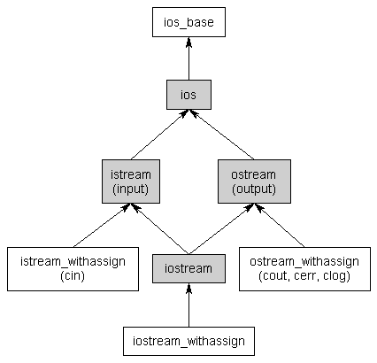

18.1 输入输出流¶
18.1 — Input and output (I/O) streams
By Alex on February 28th, 2008 | last modified by Alex on January 23rd, 2020 翻译By dashjay
输入和输出功能没有定义作为 C++ 的核心部分，但是也被通过 C++ 的标准库提供（也存在于 std 命名空间）。在之前的课程中，你引用了 <iostrea> 库的头部并且使用 cin 和 cout 对象来做简单的 I/O. 在这个课程中，我们会更详细的看一下啊 iostream 库。
The iostream library¶
当你引用了 iostream 的头部，你可以访问整个 I/O 的架构。（引入了一个名字叫做 iostream 的类）。类结构（非文件IO）看起来像这样：

第一件你可能注意到的事情就是它使用了多继承（以前我们说过要避免的）。然而，iostream 库被设计并且广泛地测试避免多继承的问题，因此你可以不用丝毫担心的使用它。
流¶
Streams
第二件你可能注意到的就是单词 stream ，它经常被滥用。作为最基础的基类，C++ 中的 I/O 使用流来实现。抽象来讲，一个 stream 就是一个字节序列可以被按顺序访问。随着时间的推移，一个 stream 可能产生或者消费潜在的无限的数据。
通常，我们处理两种不同类型的流。输入流被用来从一个数据生产者维持输入，例如一次键盘触发，一个文件，或者一个网络。例如，用户可能按下一个按钮当程序没有期待任何输入。不会忽略用户的按键，而是把数据放进输入流中，它会等待知道程序接收这个输入。
相反的，输出流被用来持续输出提供给特定的数据消费者，例如一个显示器，一个文件或者一个打印机。当写数据到任何设备，并且设备可能没有准备好接收数据 ———— 例如，打印机仍然正在预热当程序尝试写入数据到它的输出流。数据将会在输出流等待，直到开始消费它。
一些设备，列如文件和网路，有能力作为输入和输出源。
流的好处就是程序员只需要学会简单的交互，就可以在不同的设备中读写数据。流实际上如何与连接到它的实际设备接口进行沟通由操作系统决定。
C++ 中的输入输出¶
尽管 ios 派生自 ios_base，ios 通常是你会使用的最基础的类。ios 类定义了很多东西，常见于输入输出流。我们将会在未来的课程中使用他们。
istream 类是一个基础类，被使用为输入流。使用输入流，提取操作符(>>) 被用来移除流中的值。这是有意义的：当用户按下键盘的键，输入的键码被放在输入流中。你的程序紧接着会提取这个值当它可用时。
ostream 类是基础的处理输出流的类。使用输出流，插入操作符(<<)被用来将值放入流中。这也很有意义：你插入你的值到流中，数据之后会被消费者（例如：显示器）使用。
iostream 类可以同属处理输入和输出，允许双向I/O¶
最后，有几个类名以 _withassign 结尾的类。这些流类派生自 istream，ostream和 iostream（分别的）带有一个 赋值操作符定义，允许你赋值一个流给另一个。在大多数情况下，你不会直接操作这些类。
C++ 中的标准流¶
A standard stream is a pre-connected stream provided to a computer program by its environment. C++ comes with four predefined standard stream objects that have already been set up for your use. The first three, you have seen before:
一个标准流是，提供给一个电脑程序的一个预链接的流（A standard stream is a pre-connected stream provided to a computer program by its environment.）。C++ 附带了4个预定义的标准流，被定义来提供给你使用的，你之前看到过的：
- cin —— 一个
istream_withassign类，连接到标准输入（通常是键盘） - cout —— 一个
ostream_withassign类，连接到标注输出（通常是显示器） - cerr —— 一个
ostream_withassign类，连接到标准错误（通常是显示器），提供无buffer的输出 -
clog —— 一个
ostream_withassign类，连接到标准错误（通常是显示器），提供有buffer的输出
无 buffer 点的输出通常被立刻执行，而带buffer的输出通常被储存并且以块为单位写出。因为 clog 不是很常用，它通常也被标准流列表中忽略。
在接下来的课程中，我们将会看更多的 I/O 相关的详细功能